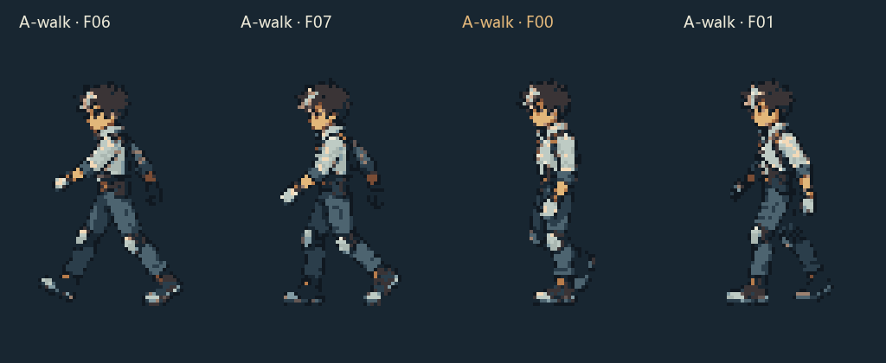
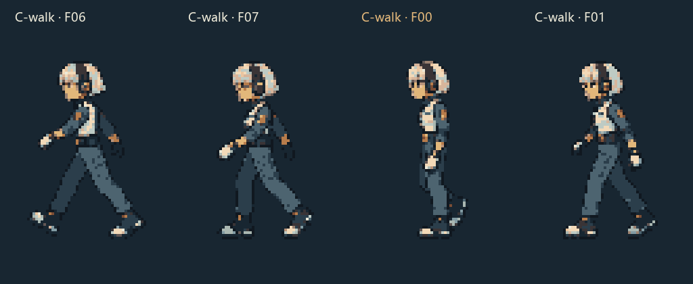

<!doctype html><html lang="zh-CN"><meta charset="utf-8"><meta name="viewport" content="width=device-width,initial-scale=1"><title>A / C · 循环衔接修订 v002</title>
<style>*{box-sizing:border-box}body{margin:0;background:#101820;color:#ece9d8;font:16px system-ui,sans-serif}main{max-width:1120px;margin:auto;padding:25px}h1{font-size:26px;margin:0 0 10px}p{color:#a7bac1;line-height:1.6;margin:0 0 18px}nav{display:flex;gap:12px;align-items:center;flex-wrap:wrap;background:#20313d;border-radius:10px;padding:14px}button,select{background:#304653;border:1px solid #5e7883;border-radius:6px;padding:8px 11px;color:#ece9d8;font:inherit;cursor:pointer}label{display:flex;gap:5px;align-items:center}input{accent-color:#e2b77a}section{display:grid;grid-template-columns:1fr 1fr;gap:18px;margin-top:18px}article{border:1px solid #304653;border-radius:12px;background:#182631;padding:14px;text-align:center}h2{text-align:left;font-size:19px;margin:0}canvas{width:256px;height:384px;image-rendering:pixelated;max-width:100%}.seam{width:100%;image-rendering:pixelated}.old{display:none}.compare .old{display:block}small{display:block;color:#b3c4ca;text-align:left;margin-top:8px}#status{color:#e2b77a;min-width:185px}footer{margin-top:20px;font-size:14px;color:#a7bac1}a{color:#e2b77a}@media(max-width:650px){main{padding:12px}section{gap:8px}article{padding:8px}canvas{width:100%;height:auto}h1{font-size:23px}}</style>
<main><h1>A / C · 循环衔接修订 v002</h1><p>待机、行走、跑动保持连续播放。下方展开接缝前后四帧，黄色标记为下一轮首帧。</p>
<nav><label>动作<select id="action"><option value="idle">待机</option><option value="walk" selected>行走</option><option value="run">跑动</option></select></label><label>速度<select id="speed"><option value="1">正常</option><option value="0.333">慢放 ×⅓</option></select></label><button id="play">暂停</button><button id="step">下一帧</button><button id="seam">跳到尾帧</button><label>帧<input id="frame" type="range" min="0" max="7" value="0"></label><span id="status">载入中</span><label><input id="compare" type="checkbox">对比旧版</label></nav>
<section id="cards"><article><h2>A · 修订版</h2><canvas id="A" width="256" height="384"></canvas><small>尾首邻域：倒数两帧 → 首两帧</small></article><article><h2>C · 修订版</h2><canvas id="C" width="256" height="384"></canvas><small>尾首邻域：倒数两帧 → 首两帧</small></article><article class="old"><h2>A · 原 v001</h2><canvas id="oldA" width="256" height="384"></canvas></article><article class="old"><h2>C · 原 v001</h2><canvas id="oldC" width="256" height="384"></canvas></article></section>
<footer><a href="human-ac-basic-v002.zip">下载循环修订包</a> · <a href="qa/loop-validation.json">查看检查记录</a> · 本轮没有扩展其他动作。</footer></main>
<script>
// 连续时间取模驱动，不在末尾添加首帧停顿，也不倒放移动动作。
const cfg={idle:{n:4,ms:250},walk:{n:8,ms:120},run:{n:8,ms:80}};
const ui=Object.fromEntries(['action','speed','play','step','seam','frame','status','compare','cards'].map(k=>[k,document.getElementById(k)]));
let atlas={},running=true,elapsed=0,last=0,f=0,cycles=0;
async function load(){for(const c of ['A','C'])for(const a of Object.keys(cfg))for(const version of ['new','old']){const im=new Image();im.src=version==='new'?`final/${c}-${a}.png`:`references/v001-final/${c}-${a}.png`;await im.decode();atlas[`${version}-${c}-${a}`]=im;}requestAnimationFrame(tick);}
function render(){const a=ui.action.value;for(const c of ['A','C'])for(const version of ['new','old']){const canvas=document.getElementById((version==='old'?'old':'')+c),g=canvas.getContext('2d'),count=version==='old'&&a==='idle'?4:cfg[a].n;const i=version==='new'?f:Math.floor(elapsed/cfg[a].ms)%count;g.imageSmoothingEnabled=false;g.fillStyle='#182631';g.fillRect(0,0,256,384);g.strokeStyle='#4d6470';g.beginPath();g.moveTo(8,320.5);g.lineTo(248,320.5);g.stroke();g.drawImage(atlas[`${version}-${c}-${a}`],i*64,0,64,96,0,0,256,384);}ui.frame.value=f;ui.status.textContent=`F${String(f).padStart(2,'0')} · 已跨尾首 ${cycles} 次`;}
function tick(t){if(running){elapsed+=Math.min(t-last,100)*Number(ui.speed.value);const stage=Math.floor(elapsed/cfg[ui.action.value].ms);f=stage%cfg[ui.action.value].n;cycles=Math.floor(stage/cfg[ui.action.value].n);}last=t;render();requestAnimationFrame(tick);}
function pauseAt(i){running=false;ui.play.textContent='播放';f=i;elapsed=(cycles*cfg[ui.action.value].n+f)*cfg[ui.action.value].ms;}
ui.action.onchange=()=>{elapsed=0;cycles=0;f=0;ui.frame.max=cfg[ui.action.value].n-1;for(const c of ['A','C'])document.getElementById('seam'+c).src=`qa/${c}-${ui.action.value}-seam.png`;};
ui.play.onclick=()=>{running=!running;ui.play.textContent=running?'暂停':'播放';};
ui.frame.oninput=()=>pauseAt(Number(ui.frame.value));
ui.step.onclick=()=>{if(f===cfg[ui.action.value].n-1)cycles++;pauseAt((f+1)%cfg[ui.action.value].n);};
ui.seam.onclick=()=>pauseAt(cfg[ui.action.value].n-1);
ui.compare.onchange=()=>ui.cards.classList.toggle('compare',ui.compare.checked);
load().catch(e=>ui.status.textContent='加载失败：'+e.message);
</script></html>
